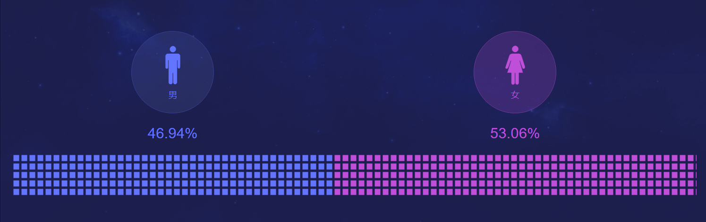
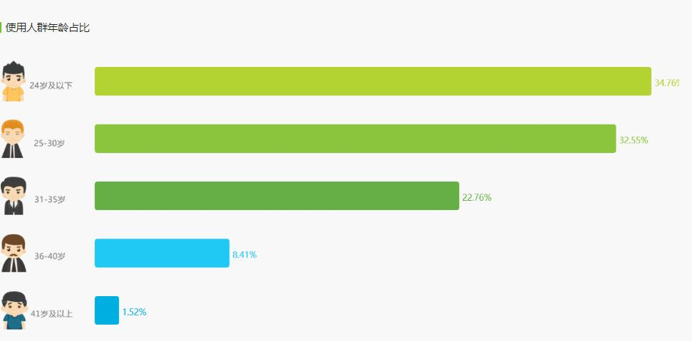

（一）目标用户
自制能力较为差不能专心学习的学生群体；
不依赖手机工作的职场人士；
生活中想减少手机诱惑，专注眼前事务的用户；
不怎么依赖手机，却又像在做事期间能有别样收获的用户。
（二）用户画像

从上面的数据中可以看出：Forest 专注森林的女性用户比男性用户多，并且年龄都相对偏小，以30岁以下的用户为主。
不难看到，30岁以下的年龄阶段特，别是青少年以及刚毕业出来工作的人的自制力，是相对较差的，他们需要能帮助他们提高自制力，进而提高学习工作效率的软件。在男女方面，女生对于学习和工作的积极性要高于男生，所以，她们会采用软件的手段来控制自己从而达到效率提升的目的。

从上面的分析不难发现：Forest 专注森林的用户大概分为以下几种：
学生群体：在众多群里来说，学生的自制力是相对较差的，家长或者学生自身为了专心学习，提高学习的效率进而采取手段来达到目的。同时也可以在同学之间对自己专注的时间进行对比，获得荣耀感。
初入职场人：由于初入职场，在学生时代所遗留下来的毛病便在职场中展现出来——手机成瘾症，因此，为了保住工作岗位，专注工作，需要解决此问题，而Forest就刚好很适合。
（三）用户需求
根据Kano模型将产品的用户需求分为：基本型需求、期望型需求和兴奋型需求三个层次，再根据已有的功能进行反推用户需求。
基本型需求：通过使用产品可以有效的达到提升学习工作以及处理当前事务的效率，能让用户真正的能暂时脱离手机；
期望型需求：能在专注的同时，可以在App中种植相同时间的小树和听到动人的背景音乐，还能同时获得金币，而金币则可以解锁不同的小树和背景音乐。，App没有广告，界面简单，容易上手；
兴奋型需求：好友功能，通过好友功能可以相互比较之间专注的时间，以及合作种植（即一同专注一段时间），还能使用金币在真实世界上种植真实的树木。